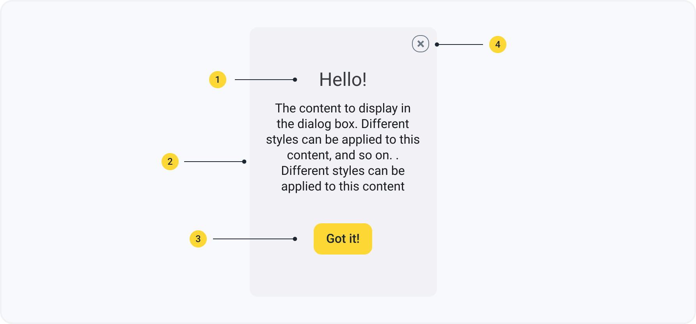

Диалоговые окна
Диалоговое окно — это дополнительное окно, которое позволяет пользователям выполнять команду, задавать вопрос пользователям или предоставить пользователям информацию или отзывы о ходе выполнения.
Компонент в FigmaАнатомия
- Заголовок диалогового окна
- Основной текст диалогового окна
- Кнопка диалогового окна
- Кнопка “закрыть диалоговое окно”
Состония
Диалоговые окна в данной дизайн системе могут иметь 2 состояния: по умолчанию и активное.
Спецификация
- body/natural-800
- body/natural-100
- body/primary-600
- body/natural-600
Стандартные отступы